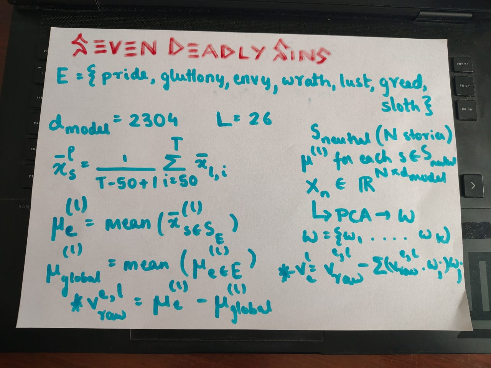
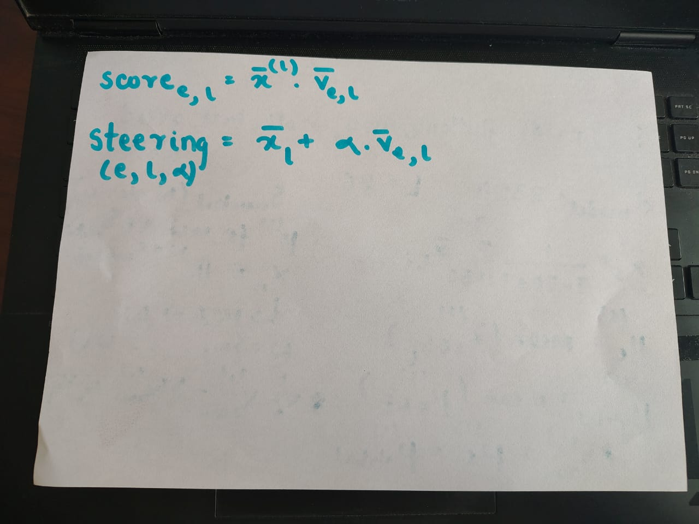

note: this is my implementation of a subset of the concepts discussed in the paper Emotion Concepts and their Function in a Large Language Model published by Anthropic (https://transformer-circuits.pub/2026/emotions/index.html)
if you're looking for a paper walkthrough, i have done that along with my own implementation explanation (with math explanations) in the video [here]
github: https://github.com/sortira/seven-deadly-sins-of-gemma
introduction
one fine day, as i scroll through twitter, i find this paper called emotion concepts, and by anthropic. enough reasons to be curious. i give it a read and i find it veryyy interesting. partly because i was thinking along the similar lines for a few days (im as goated as anthropic labs, chat) but also because they had found out a concrete way to prove the hypotheses (my favourite part is the {x} grams of tylenol part, that is really insane, more on that later). naturally i had to do something.
the fact that emotions can be studied in this interpretable form, and some of the other results of the paper really appealed to me. so i decided to replicate a subset of their claims with an open source model which can run on most GPUs, i.e., gemma-2-2B.
the sinclopedia
(pun on the word encyclopaedia, encyclopaedia for sins)

(above) how the emotion vectors are generated (below) how the similarity with a sin is calculated and how steering is done

the seven deadly sins: pride, lust, envy, wrath, gluttony, sloth, and greed. we want a vector of $R_{d\_model}$ for each of these.
initially, i prompted Gemini with each of the sins to generate short stories (you can read them/use them from https://github.com/sortira/seven-deadly-sins-of-gemma/data/) which i properly arranged in the form of directories (one folder per sin) i also generated 20 emotionally neutral stories, as per the paper, to remove the baseline non-emotional info from these vectors.
the math, as shown in the two above photos, is not that difficult. for each layer and each emotion, average the activations of all tokens except the first 50 (think of it this way, the first 50 tokens have zero-to-little info about the enotion/sin, its usually something like once upon a time..., or there used to be.... etc., which only adds noise and no useful information about the sin or the emotion that we are trying to analyse) take the mean of these vectors of all stories across a particular sin, subtract global mean and then use the PCA analysis of the neutral stories to obtain the clean vectors.
how to ensure we are correctly sinful??
the next step is to come up with a way to test out that the vectors we got are correct or not. so i created a streamlit app, where i can enter a short story and for every layer i can see which of the emotion vectors align the most with the story and this is a good way to verify. to my surprise it was all wrong at first, then i realised oh damn, i'm checking way too early. the anthropic paper mentioned checking in 66% deep layers, and when i checked with this fact in mind, bingooo, the results were correct.
another thing i developed, which was even more insightful but funny, is that you can give a prompt, and gemma will generate the text, like a typical model, but you can choose a layer where LLM steering will occur using these emotion vectors, and then we can see how the model's outputs "drift" towards the chosen sin. funny things came up, like how adding "lust" steering to gay relationships still made the model predict straight relationship pronouns, and so on.
what next?
the groundwork is there, will implement more of the stuff from the paper like how parameterised texts where the sin/emotion is proportional to variations in a certain token (the tylenol example, where {x} grams, x is small, the model is ok, large values of x make the model fearful and anxious for user's safety) has to be tested. there are lot of challenges, namely this is a 2B paramter model whereas the anthropic paper worked with atleast 100B (active) parameter models, but i think these limitations will lead to observing slightly different insights of what they claimed in larger models to what happens in this smaller models.
as always, thanks to anthropic team for such a wonderful paper and thanks to neel nanda for his resources on mechanistic interpretability and transformer-lens library which made this project hell lot smoother.
i don't think this blog was that long, partly because i feel this is better explained in a video so go watch that [here]